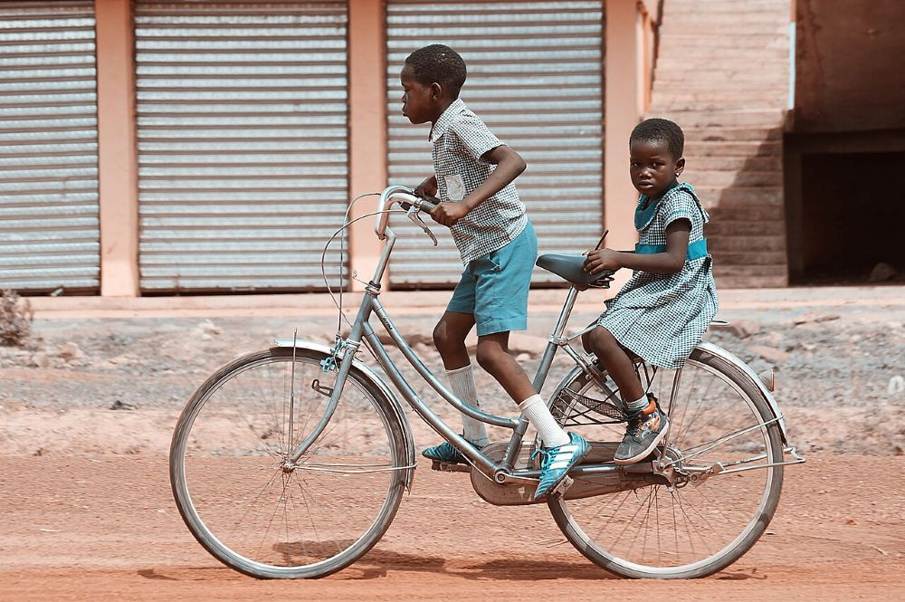

Cycling became popularized in Europe and North America in the latter part and especially the last decade of the 19th century.[5] Today, over 50 percent of the human population knows how to ride a bike.[6][7]
People have been riding bicycles to work since the initial bicycle heyday of the 1890s. According to the website Bike to Work, this practice continued in the United States until the 1920s, when biking experienced a sharp drop, in part due to the growth of suburbs and increasing usage of the car.[7] In Europe, cycling to work continued to be common until the end of the 1950s.


four key aspects (steering, safety, comfort and speed) improved over the penny-farthing, bicycles became very popular among elites and the middle classes in Europe and North America in the middle and late 1890s. It was the first bicycle that was suitable for women, and as such became the "freedom machine" (as American feminist Susan B. Anthony called it),[13] giving women feeling of freedom and self-reliance.